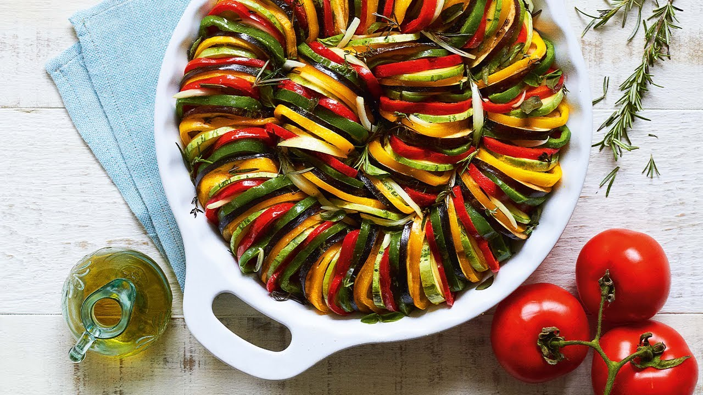
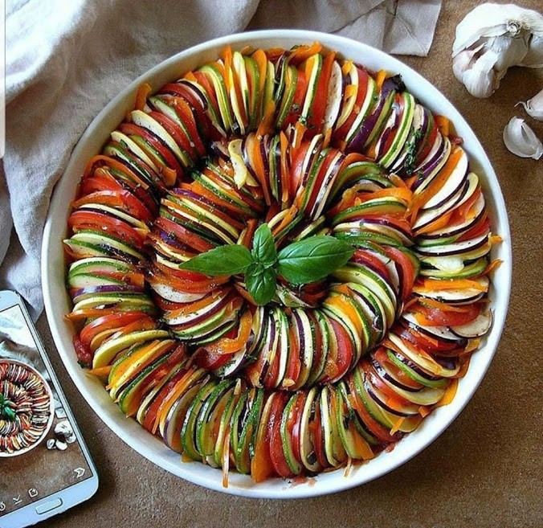
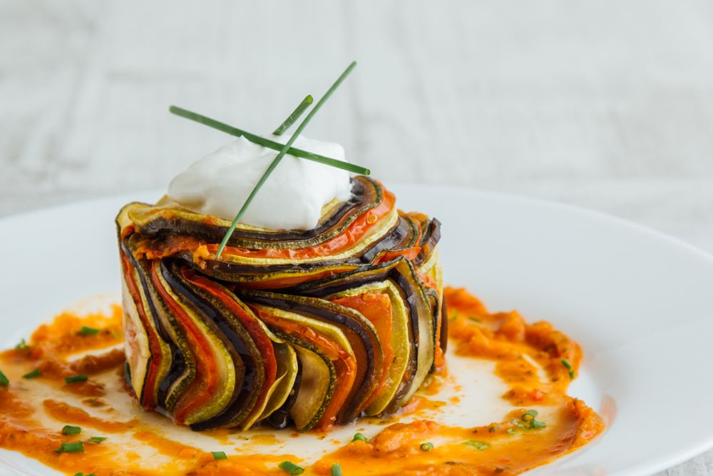

Ratatouille
Ratatouille
Ingredientes:
Refogado
1 abobrinha grande em rodelas finas (0,5 cm)
1 berinjela em rodelas finas (0,5 cm)
4 colheres (sopa) de azeite
meia cebola picada
2 dentes de alho picados
5 tomates sem pele e sem sementes, picados
2 colheres (sopa) de tomilho
1 ramo de alecrim
1 pitada de pimenta-do-reino
2 colheres (sopa) de manjericão
Modo de preparo
Em um recipiente, coloque a abobrinha e a berinjela e salpique uma colher (chá) de MAGGI Fondor por cima.
Espalhe bem e deixe descansar por cerca de 30 minutos.
Escorra toda a água que formar e seque bem cada rodela com um papel-toalha. Reserve.
Em uma frigideira, aqueça 2 colheres (sopa) de azeite e grelhe a abobrinha e a berinjela reservadas (colocando poucas rodelas por vez na frigideira, com cuidado para não amolecerem demais). Reserve.
Na mesma frigideira, aqueça 1 colher (sopa) de azeite e refogue a cebola e o alho.
Adicione os tomates picados, o tomilho, o alecrim, a pimenta-do-reino e o manjericão.
Cozinhe em fogo baixo até que o tomate comece a se desmanchar. Reserve.
Montagem
Em um recipiente refratário, cubra o fundo com o refogado dos tomates reservados e arrume as fatias de legumes, intercalando fatias de abobrinha, pimentões, cebola e berinjela (arrume os vegetais na vertical). Reserve.
Em um recipiente, misture o azeite e o Fondor restantes, e regue os legumes reservados.
Cubra com papel-alumínio e leve ao forno médio-alto (200°C), preaquecido, por cerca de 30 minutos. Sirva.
Abaixo algumas imagens e um vídeo para acompanharem
  